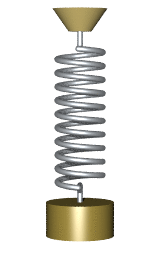
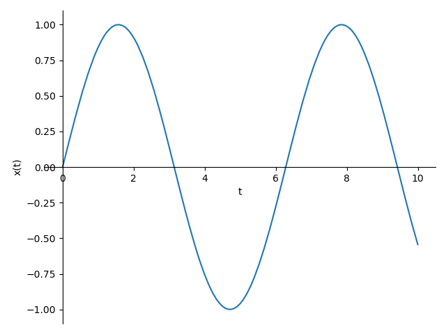
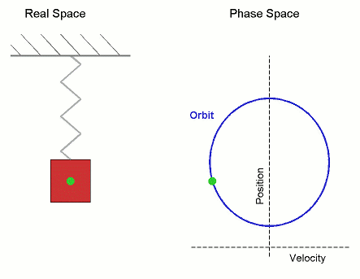

Tutorial: Numerical Methods#
This live script will show you how to use Python for numerical methods such as integration or differentiation. One way uses an array approach and the other uses the symbolic library SymPy.
Polynomial#
This method enters the polynomials as an array. You have come across this form before when fitting data and the way it produces the value of \(m\) and \(c\) for \(y=mx+c\).
It requires the coefficients to be entered in decreasing order, with zeros for those that are missed out. For example for the function
\(f(x) = 3x^3 + x + 3\)
import numpy as np
p = np.array([3, 0, 1, 3])
The polynomial can then be evaluated for \(x=2\) by using np.polyval().
np.polyval(p,2)
You can then combine this output to plot out the functional form of polynomials such as
import numpy as np
import matplotlib.pyplot as plt
x = np.linspace(-5,5,100)
p = np.array([3, 0, 1, 3])
y = np.polyval(p,x)
plt.plot(x, y)
plt.show()
plt.close()
Integration and differentiation of polynomials#
The polynomial can be differentiated/integrated using the functions np.polyder()/np.polyint() which returns an array that specifies the coefficients.
Here we differentiate and integrate the following polynomial.
\(f(x) = x^2 -2x - 3\)
p = np.array([1, -2, -3]) # f(x) = x^2 - 2x -3
print(np.polyder(p)) # gives 2 -2 meaning df(x)/dx = 2x -2
print(np.polyint(p)) # Note that it gives the constant as 0
TASK 1#
Differentiate and integrate the following
\(y=3x^2\)
\(f(x)=6x^3 - 9x + 4\)
\(y = 2t^3 -10t^2 + 13t\)
\(f(x)=7x^6 -10\)
# differentiate
# integrate
TASK 2#
Solve the following definite integral
\(\int_{1}^{2} x^2 \,dx\)
Symbolic Math#
As you can see the polynomial way is a bit awkward and limited. The Symbolic Math library SymPy lets you analytically perform differentiation, integration, simplification, transforms, and equation solving in a much easier way.
Symbolic variables#
Symbolic values are exact representations, unlike floating-point numbers (such as what we have been used previously). To generate them you need to specify a symbolic variable using the function sm.symbols(). Without this it will not work as a symbolic value but just as a standard variable.
When you use sm.symbols(), it creates a new symbolic variable that does not have any assumptions on how it will be used.
import sympy as sm
x, y = sm.symbols('x y') # space or comma separated
x, y = sm.symbols('x,y') # equivalent to line above
print(x, y) # Note that this gives x and y as an answer.
type(x) # Tells type of x is sympy symbol
type(y) # Tells type of y is sympy symbol
Note: Variables names on the left hand side are unrelated to the right hand side. However, to avoid confusion it is convention to use the same name.
y, x = sm.symbols('x y')
print('x:', x)
print('y:', y)
If you only use letter, you can directly import them from SymPy’s abc module. All Latin and Greek alphabets are defined as symbols.
from sympy.abc import x,y,z
Symbolic numbers#
To show the difference between symbolic and numerical numbers, we can create a symbolic number by using SymPy and compare it to the same floating-
point number. In the overview page, we showed an example with irrational numbers while here we use rational numbers. To define a symbolic rational number the function sm.Rational() is used, because in Python / represents floating point division. So any data type, e.g. int or symbolic.Integer, will result in a floating point number (float). For example, the division of 2 integers 1 and 4 will result in 0.25 (float) and not 0 (int).
x = sm.Rational(1, 3) # Creates the symbolic variable x, with the value 1/3
type(x) # variable type is symbolic rational number
print(x) # exact fraction
y = 1/3 # Calculates 1/3 and stores it as a floating point value in the variable y
type(y) # float
print(y) # floating point
x = x * 2 # exact fraction
print(x)
y = y * 2 # float
print(y)
print(x.evalf()) # evaluates x, calculates the floating value
print(x.evalf(100)) # as 1/3 is the exact value, we are able to calculate as many digits as we want.
Note: how x remains as a fraction (exact) and the floating point effectively rounds the value due to the structure
of the floating point variable.
Symbolic equations#
Using the symbolic equations you can solve and rearrange formula very quickly.
Let us try to form the equation \(y = 3x^2 - 2x\). To do this you must:
Create the symbolic variables
xandy.Define variable
eqnand assign the equationsm.Eq( y, 3*x**2 - 2*x)eqndoes not need to be defined as symbolic variable as it inherits that from the symbolic variablexandy.
import sympy as sm
from sympy.abc import x,y # define a symbolic variable x and y
eqn = sm.Eq(y, 3*x**2 - 2*x) # defines the equation assigned to a variable of eqn
print('Equation:', eqn) # note this holds equation in symbolic form, left and right hand side
type(eqn)
Once set up you can then work with these symbolic equations to rearrange and solve your equations.
print(sm.solve(eqn,y)) # rearrange equation for y, note sympy factorised the equation
print(sm.solve(eqn,x)) # rearrange equation for x, note two solutions (... +/- sqrt ...).
print(eqn.subs(x,3)) # substitute x for the value of 3
Working with symbolic equations#
You can also factorise, expand and simplify equations. These are somewhat limited but a good starting point for many engineering problems you will encounter. If you read/search through the SymPy documentation, you will find examples for more complex equations and problems.
print(sm.factor(eqn)) # factorise the equation.
print(sm.expand(eqn)) # expand the equation.
print(sm.simplify(eqn)) # does do anything in this example, but can be very useful for complex equations.
You can rearrange complex functions in exactly the same way.
P, V, n, R, T = sm.symbols('P, V, n, R, T')
ideal_gas = sm.Eq(P*V, n*R*T) # define equation
print(sm.solve(ideal_gas, V)) # rearrange for V
print(sm.solve(ideal_gas, P)) # rearrange for P
print(ideal_gas.subs(P,2)) # substitute P for the value of 2
# or multiple values
print(ideal_gas.subs([(P, 2), (R, 8.31), (T, 293), (n, 1)]))
# if you want to know the volume, you need to rearrange the equation.
volume = sm.solve(ideal_gas.subs([(P, 2), (R, 8.31), (T, 293), (n, 1)]), V)
print(volume) # value stored in a list.
print('Volume:', '{:.2f}'.format(volume[0]))
If you do not need to rearrange your equation, you can define equations as follow.
from sympy.abc import x
eqn = x**2 - 1 # set up equation here x²-1.
print(sm.factor(eqn)) # factorise the equation.
# Alternatively, you can directly plug in the equation.
print(sm.factor(x**2 - 1)) # Using Sympy like a calculator
eqn = (x + 5) * (x - 2) # new equation
print(sm.expand(eqn)) # expand the equation.
eqn = (1 - x**2) / (1 - x)
print(sm.simplify(eqn)) # simplify the equation
eqn=(x - 1)*(x + 1)*(x**2 + x + 1)*(x**2 + 1)*(x**2 - x + 1)*(x**4 - x**2 + 1)
print(sm.simplify(eqn)) # Can be very useful for complex equations.
Roots of equations#
Roots of equations can be factorised or the equation can be solved for \(f(x) = 0\).
eqn = x**3 - x**2 - x + 1 # define some equation
print(sm.factor(eqn)) # factorised to make the roots visible
print(sm.solve(eqn, x)) # Note: this gives you 2 solution as 1 occurs twice.
print(sm.roots(eqn, x)) # sm.roots also tells you how often a root occurs.
# if you do not want to rearrange your equation which could look like this x^3 - x^2 = x - 1, you can use sm.Eq()
print(sm.solve(sm.Eq(x**3 - x**2, x - 1), x))
TASK 3#
Set up the equation of motion \(s(t)=0.5at^2\).
Set acceleration \(a\) to be \(9.81~\mathrm{ms}^{-1}\) and using the symbolic variables, solve for when \(t=2\mathrm{s}\) (s for unit seconds).
# create symbolic variables.
# define equation - set to a variable - for example eqn
# Use equation variables and subs to set a=9.81 and t=2.
Plotting symbolic functions#
You can plot symbolic functions using the function sm.plot(). It requires the function (equation in symbolic form). You can
also define limits (here between -6 and 4), points, line colours etc. much like plt.plot(), but called within sm.plot().
from sympy.abc import x
eqn = x**2 - 4 # sets up the equation
sm.plot(eqn, (x, -6, 4)) # plots the equation from -6 to 4
print(sm.solve(eqn)) # at eqn = 0, x is either 2 ot -2 (2 roots)
# To indicate the roots we can use markers.
sm.plot(eqn, (x, -6, 4), line_color='r', markers=[{'args': [2, 0, 'go']}, {'args': [-2, 0, 'b*']}])
Note: sm.plot() can be used to do some basic graphs. However, for complex plots the matplotlib library should be used. As seen in the example above for the markers parameter (complicated looking parameter call), SymPy uses the external matplotlib.pyplot.plt() function accessed via args.
You can look up using the help function (sm.plot? or help(sm.plot). More details with examples can be found here.
TASK 4#
Plot sm.tan(x) between -10 and 5 using sm.plot(). Note: SymPy contains symbolic implementation for commonly used functions like log() and trigonometric functions.
Modify your code to show a red cross at the point of \(x=-5\).
TASK 5#
Set-up and rearrange the Brinell equation in terms of d. You can find the Brinell equation in your ??? lecture notes.
Think about your answer and what it means.
Modify your code such that for given (user input) values of HB, D and F, it will calculate the value of d.
Simultaneous equations#
We solved an equation using the solve function, but we can use solve on a set of equations together.
For instance, If we had the following set of equations:
\(2x+y+z=2\)
\(4-x+y=3z\)
\(x+2-2y=z\)
We can solve them simultaneously by combining them into a list ([]).
from sympy.abc import x, y, z
# define equations
eqn1 = sm.Eq(2*x + y + z, 2) # alternatively you can rearrange,
eqn2 = sm.Eq(4 - x + y, 3*z) # so that right hand side is zero
eqn3 = sm.Eq(x + 2 - 2*y, z) # and define eqn1 = 2*x + y + z -2
solutions = sm.solve([eqn1, eqn2, eqn3], x, y, z) # create list of equation and solve them for x, y and z.
print(solutions)
print('x={}, y={}, z={}'.format(solutions[x],solutions[y],solutions[z]))
print('x={:.2f}, y={:.2f}, z={:.2f}'.format(solutions[x].evalf(),solutions[y].evalf(),solutions[z].evalf()))
TASK 6#
Using SymPy solve the following set of simultaneous equations:
\(3z+6x=2\)
\(-6x+y=6z\)
\(-3y+6=-z\)
TASK 7#
A student has answered the following question but has one mistake in their code which has led them to getting the wrong solution.
Question: Solve the following simultaneous equations
\(x+6y=2\)
\(2x-3y=0\)
The code they have produced is below. Can you correct it for them?
from sympy.abc import x, y
eqn1 = x + 6*y - 2
eqn2 = 2*x - 3*y
solutions = sm.solve([eqn1, eqn1], x, y)
print('x={}, y={}'.format(solutions[x],solutions[y]))
print('x={:.2f}, y={:.2f}'.format(solutions[y].evalf(),solutions[x].evalf()))
Integration and differentiation#
One particular strength of the symbolic library SymPy is to be able, in one line, to integrate and differentiate your symbolic functions.
from sympy.abc import x
a = sm.diff(sm.cos(x), x) # differentiating cos(x)
b = sm.integrate(sm.sin(x), x) # integrating sin(x)
c = sm.diff(sm.log(x), x) # differentiating ln(x)
d = sm.integrate(1/x, x) # integrating 1/x remember log is ln in matlab
print(a, b, c, d)
You can also use this with symbolic variables and equations.
from sympy.abc import x
eqn = 2*x + 1
a = sm.diff(eqn, x) # differentiate d
print(a)
b = sm.integrate(eqn, x) # integrate x
print(b)
b2 = sm.expand(b) # multiply out the integration
print(b2)
c = sm.integrate(eqn,(x, 1,2)) # integrate x between limits of 1 and 2
print(c)
d = sm.integrate(sm.exp(-x), (x, 0, sm.oo)) # integrate from 0 to infinity
print(d)
Here we plot the function and calculate the differential(s) of the function.
from sympy.abc import x
eqn = x**4 # sets up a symbolic variable holding x^4
diff_eqn = sm.diff(eqn, x) # can then differentiate that wrt x
nd_diff = sm.diff(eqn, x, x) # second derivative
rd_diff = sm.diff(eqn, x, 3) # third derivative, equivalent to sm.diff(eqn, x, x, x)
# Plot them into a single plot
sm.plot(eqn,diff_eqn, nd_diff, rd_diff, sm.diff(eqn, x, 4), (x, -2, 2))
Note: If you want to customise colours and line styles, you need to use the matplotlib library.
Multivariate functions#
These are functions with more than one variable.
from sympy.abc import x, z
eqn = x / (1 + z**2) # define equation based on two variables
# differentiation
print(sm.diff(eqn, x))
print(sm.diff(eqn, z))
print(sm.diff(eqn, x, z))
print(sm.diff(eqn, z, x))
# integration
print(sm.integrate(eqn, x)) # integrate with respect to x
print(sm.integrate(eqn, z)) # integrate with respect to z
print(sm.integrate(eqn, x, z)) # integrate with respect to x and z
You can pass multiple limit tuples () to perform a multiple integral. For example, to compute
\(\int_{-\infty}^{\infty}\int_{-\infty}^{\infty} e^{-x^2-y^2} \,dx\,dy\)
you write the following code
from sympy.abc import x, y
print(sm.integrate(sm.exp(-x**2 - y**2), (x, -sm.oo, sm.oo), (y, -sm.oo, sm.oo)))
TASK 8#
In mathematics, a parametric equation defines a group of quantities as functions of one or more independent variables called parameters.
A circle of radius 1 can be expressed as
\(x=\cos(t)\)
\(y=\sin(t)\)
First use this to plot a circle using the SymPy library and sm.plot().
Modify your code to generate a circle with radius of 2 with a centre located at \(x=1\) and \(y=0\).
TASK 9#
Below is a set of data for the Youngs modulus of a metal with a variable amount of additive.
Additive (g) |
Young’s Modulus (GPa) |
|---|---|
0.0 |
125 |
0.3 |
139 |
0.4 |
142 |
0.6 |
146 |
0.7 |
145 |
0.9 |
143 |
1.1 |
138 |
Plot out the data. There appears to be a potential maximum in the Young’s modulus.
Fit the data with a polynomial. Use this formula to estimate the amount of additive that leads to the maximum Young’s modulus (to 2 dp).
# plot the data
# fit the data
# using the fit equation, differentiate it and solve for the turning point (i.e. when equal to zero)
# print answer to the screen
Differential equations (only if you are interested)#
Warning
Solving differential equations is not required in the exam, but could be useful later on. If you do not want to know it now, you can stop here.
Simple Harmonic Oscillator

By Svjo - Previously uploaded version of Animated-mass-spring.gif here, CC BY-SA 3.0, Link.
{kind=link}
{kind=link}
In a simple harmonic oscillator a mass \(m\) swings back and forth without anything pushing it or slowing it down (neither driven nor damped). The restoring force \(F\) must be directly proportional to how far it’s moved from equilibrium (\(x=0\)). The restoring force comes in our example from a spring with spring constant \(k\).
We can plot the displacement \(x\) as a function of time \(t\).

The motion is periodic and sinusoidal. Using Newton’s second law the balances of forces of the system is
\(F = ma = - xk\).
To bring the equation into the form of a differential equation we include the time dependence into the equation:
displacement: \(x(t)\)
velocity: \(\frac{\mathrm{d}}{\mathrm{d}t} x(t) = \dot{x}(t)\)
acceleration: \(\frac{\mathrm{d}^2}{\mathrm{d}t^2} x(t) = \ddot{x}(t)\)
This leads to the following equation:
\(m\ddot{x}(t) = -kx(t)\)
or
\(\ddot{x}(t) + \frac{k}{m}x(t) = 0\).
To symbolically solve the differential equation we need to define \(x(t)\) as a function in SymPy using the function sm.Function().
import sympy as sm
t = sm.symbols('t') # defines the independent variable t
x = sm.Function('x')(t) # defines the function x(t)
k, m = sm.symbols('k, m', real=True, positive=True) # k and m needs to be positive and real to be physically.
Note: Mathematically \(k\) and \(m\) can have any value and SymPy will still be able to solve the differential equation, but the general solution will have imaginary solutions as well. If you are interested you can solve the differential equation more generally and then obtain the real solution by defining constrains on \(k\) and \(m\). However, it is much easier to define the symbolic variables with constrains in the first place and then solve the differential.
# Define the differential equation for a simple harmonic oscillator
diff_eq = sm.Eq(x.diff(t, 2) + k/m * x, 0)
# Solve the differential equation
solution = sm.dsolve(diff_eq, x)
print("Solution of differential equation:", solution)
The solution of the differential equation is
\(x(t) = C_1\sin\left(\sqrt{\frac{k}{m}}t\right) + C_2\cos\left(\sqrt{\frac{k}{m}}t\right)\).
If we set or substitute \(\omega:=\sqrt{\frac{k}{m}}\) we obtain the following equation:
\(x(t) = C_1\sin(\omega t) + C_2\cos(\omega t)\),
where \(\omega\) is also known as the angular velocity/frequency.
What is the meaning of the constants \(C_1\) and \(C_2\)? If we set \(t=0\), we obtain \(x(0) = C_2\), which is the initial position \(x_0\) of the weight. If we set the first derivative \(t=0\), we obtain \(\dot{x}(t) = \omega*C_1\) where \(C_1\) is the initial velocity \(v_0\) of the weight.
Therefore, our solution for the simple harmonic oscillator is
\(x(t) = \frac{v_0}{\omega}\sin(\omega t) + x_0\cos(\omega t)\)
The figure illustrates the motion in position-velocity space (phase space).

By Mazemaster - Own work, Public Domain, Link.
Note (11Jul25): What is the lecture code for TASK 5?